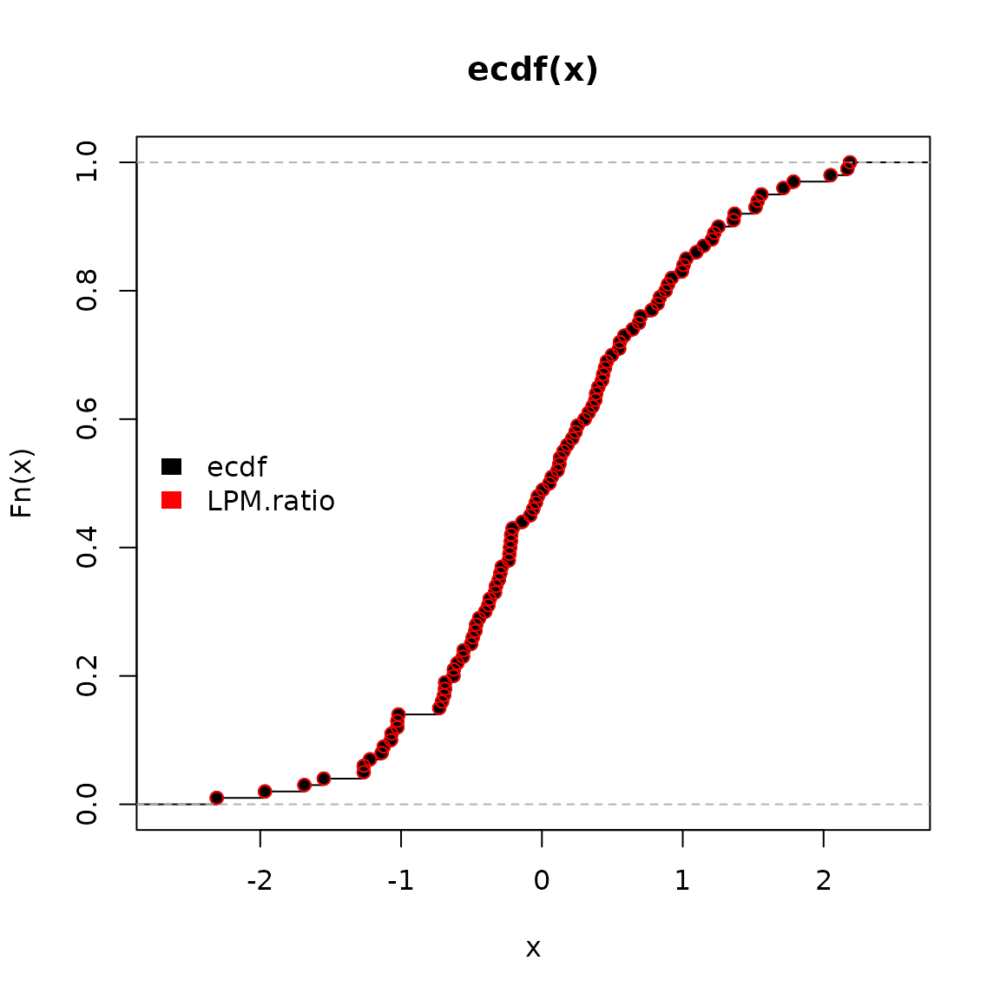
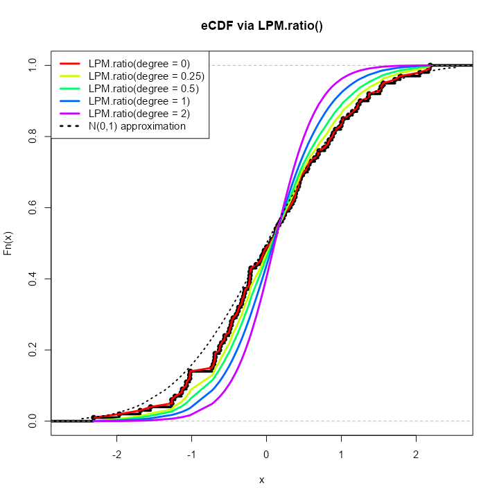
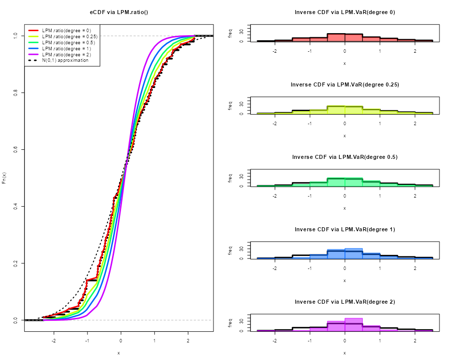
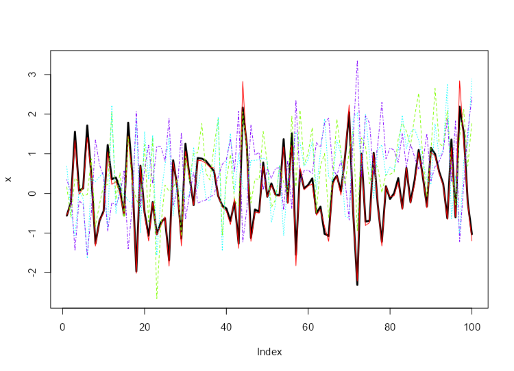
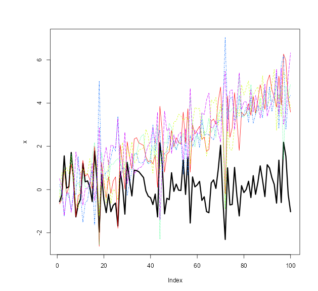

Getting Started with NNS: Sampling and Simulation
Fred Viole
Source:vignettes/NNSvignette_05_Sampling.Rmd
NNSvignette_05_Sampling.RmdNNS offers several novel sampling methods from any
distribution, as well as simulating variables while maintaining their
dependence.
Sampling
CDFs
Cumulative distribution functions (CDFs) represent the probability a variable will take a value less than or equal to .
Empirical CDF
The empirical CDF is a simple construct, provided in the base package
of R. We can generate an empirical CDF with the ecdf
function and create a function (P) to return the CDF of a
given value of
.
## Empirical CDF
## Call: ecdf(x)
## x[1:100] = -2.3092, -1.9666, -1.6867, ..., 2.169, 2.1873
P = ecdf(x)
P(0); P(1)## [1] 0.48## [1] 0.83Lower Partial Moment CDF
(LPM.ratio)
The empirical CDF and Lower Partial Moment CDF
(LPM.ratio) are identical when the degree
term of the LPM.ratio is set to zero.
Degree 0 LPM:
LPM.ratio is equivalent to the following form for any
target
and variable
:
Using the same targets from our ecdf example above (0,1)
we can compare LPM.ratios.
## [1] 0.48## [1] 0.83Calculating the probability for every target value in
,
we can plot both methods visualizing their identical results.
ecdf function in black and
LPM.ratio in red.

LPM.ratio degree > 0
By simply increasing the degree parameter to any
positive real number, we can generate different CDFs of our initial
distribution
.

Generating PDFs with (LPM.VaR)
We can now generate distributions using the same insights and
degree manipulation in the corresponding
LPM.VaR function, a la value-at-risk,
providing inverse CDF estimates.
The general form in the following plots is:
LPM.VaR(percentile = seq(0, 1, length.out = 100), degree = 0, x = x)
Any length percentile can be used to sample from the
underlying distribution
.

Viewing the first 10 samples from each of the degrees
compared to our original
.
degree.0.samples = LPM.VaR(percentile = seq(0, 1, length.out = 100), degree = 0, x = x)
degree.0.25.samples = LPM.VaR(percentile = seq(0, 1, length.out = 100), degree = 0.25, x = x)
degree.0.5.samples = LPM.VaR(percentile = seq(0, 1, length.out = 100), degree = 0.5, x = x)
degree.1.samples = LPM.VaR(percentile = seq(0, 1, length.out = 100), degree = 1, x = x)
degree.2.samples = LPM.VaR(percentile = seq(0, 1, length.out = 100), degree = 2, x = x)
head(data.frame(check.names = FALSE, cbind("original x" = sort(x), degree.0.samples,
degree.0.25.samples,
degree.0.5.samples,
degree.1.samples,
degree.2.samples)), 10)
original x degree.0.samples degree.0.25.samples degree.0.5.samples
1: -2.309169 -2.309169 -2.309097 -2.3090915
2: -1.966617 -1.966617 -1.941190 -1.6935509
3: -1.686693 -1.686693 -1.599486 -1.4541494
4: -1.548753 -1.548753 -1.382553 -1.2462731
5: -1.265396 -1.265396 -1.250823 -1.1453748
6: -1.265061 -1.265061 -1.176436 -1.0745440
7: -1.220718 -1.220718 -1.119655 -1.0252742
8: -1.138137 -1.138137 -1.067793 -0.9868693
9: -1.123109 -1.123109 -1.026429 -0.9322105
10: -1.071791 -1.071791 -1.014276 -0.8710942
degree.1.samples degree.2.samples
1: -2.3091021 -2.3091170
2: -1.4744653 -1.1614908
3: -1.2159961 -0.9709972
4: -1.0823023 -0.8610192
5: -0.9968028 -0.7810300
6: -0.9290505 -0.7169770
7: -0.8666886 -0.6631888
8: -0.8090433 -0.6170691
9: -0.7556644 -0.5765608
10: -0.7069835 -0.5403318Simulation
Bootstrapping (NNS.meboot)
NNS.meboot is based on the maximum
entropy bootstrap, available in the R-package meboot. This
procedure is specifically designed for time-series and avoids the IID
assumption in traditional methods.
The ability to sample from specified correlations ensures the full spectrum of future paths is sampled from. Typical Monte Carlo samples are restricted to [-0.3, 0.3] correlations to the original data.
We will generate 1 replicate of
for each value of a sequence of
values (the
),
and then plot the results compared to our original
(black line). NNS.MC is a streamlined
wrapper function for this functionality of
NNS.meboot.
boots = NNS.MC(x, reps = 1, lower_rho = -1, upper_rho = 1, by = .5)$replicates
reps = do.call(cbind, boots)
matplot(reps, type = "l", col = rainbow(length(boots)))
lines(x, type = "l", lwd = 3, ylim = c(min(reps), max(reps)))
Checking our replicate correlations:
sapply(boots, function(r) cor(r, x, method = "spearman"))
rho = 1 rho = 0.5 rho = 0 rho = -0.5 rho = -1
0.99732373 0.51147915 0.01036904 -0.48720072 -0.98294629 More replicates and ensembles thereof can be generated for any number of values.
target_drift Specification
We can also specify a target drift in our replicates with the
target_drift parameter.
boots = NNS.MC(x, reps = 1, lower_rho = -1, upper_rho = 1, by = .5, target_drift = 0.05)$replicates
reps = do.call(cbind, boots)
plot(x, type = "l", lwd = 3, ylim = c(min(c(x, reps)), max(c(x, reps))))
matplot(reps, type = "l", col = rainbow(length(boots)), add = TRUE)
Please see the full NNS.meboot and
NNS.MC argument documentation.
Simulating a Multivariate Dependence Structure
Analogous to an empirical copula transformation, we can generate
new data from the dependence structure of our
original data via the following steps:
- Determine the dependence structure:
This is accomplished using
LPM.ratio(1, x, x) for continuous
variables, and LPM.ratio(0, x, x) for
discrete variables, which are the empirical CDFs of the marginal
variables.
- Generate or supply
new data:
new data does not have to be of the same distribution or
dimension as the original data, nor does each dimension of
new data have to share a distribution type.
- Apply dependence structure to
new data:
We then utilize LPM.VaR to ascertain
new data values corresponding to original data
position mappings, and return a matrix of these transformed values with
the same dimensions as new.data.
set.seed(123)
x = rnorm(1000); y = rnorm(1000); z = rnorm(1000)
# Add variable x to original data to avoid total independence (example only)
original.data = cbind(x, y, z, x)
# Determine dependence structure
dep.structure = apply(original.data, 2, function(x) LPM.ratio(degree = 1, target = x, variable = x))
# Generate new data with different mean, sd and length (or distribution type)
new.data = sapply(1:ncol(original.data), function(x) rnorm(nrow(original.data)*2, mean = 10, sd = 20))
# Apply dependence structure to new data
new.dep.data = sapply(1:ncol(original.data), function(x) LPM.VaR(percentile = dep.structure[,x], degree = 1, x = new.data[,x]))Compare Multivariate Dependence Structures
Similar dependence with radically different values, since we used in place of our original observations.
head(original.data)
head(new.dep.data)
x y z x
[1,] -0.56047565 -0.99579872 -0.5116037 -0.56047565
[2,] -0.23017749 -1.03995504 0.2369379 -0.23017749
[3,] 1.55870831 -0.01798024 -0.5415892 1.55870831
[4,] 0.07050839 -0.13217513 1.2192276 0.07050839
[5,] 0.12928774 -2.54934277 0.1741359 0.12928774
[6,] 1.71506499 1.04057346 -0.6152683 1.71506499
[,1] [,2] [,3] [,4]
[1,] -2.028109 -10.498044 -0.2090467 -1.682949
[2,] 4.608303 -11.390485 15.6213689 4.852534
[3,] 39.478741 8.836581 -0.8508203 40.585505
[4,] 10.683731 6.609255 36.0328589 10.877677
[5,] 11.866922 -47.955235 14.3111350 12.064633
[6,] 42.665726 29.639640 -2.4141874 43.797025Alternative Using NNS.meboot
Alternatively, if we wish to keep the simulated values close to the
original data, we can apply the NNS.meboot
procedure to each of the variables.
We will generate 1 replicate (for brevity) of
to our original.data, use their ensemble and
note the multivariate dependence among our
new.boot.dep.data.
# Apply bootstrap to each variable
new.boot.dep.data = apply(original.data, 2, function(r) NNS.meboot(r, reps = 100, rho = .95))
# Reformat into vectors
boot.ensemble.vectors = lapply(new.boot.dep.data, function(z) unlist(z["ensemble",]))
# Create matrix from vectors
new.boot.dep.matrix = do.call(cbind, boot.ensemble.vectors)Checking ensemble correlations with
original.data:
for(i in 1:4) print(cor(new.boot.dep.matrix[,i], original.data[,i], method = "spearman"))
[1] 0.9452863
[1] 0.9499478
[1] 0.945878
[1] 0.9442845Compare Multivariate Dependence Structures
Similar dependence with similar values.
head(original.data)
head(new.boot.dep.matrix)
x y z x
[1,] -0.56047565 -0.99579872 -0.5116037 -0.56047565
[2,] -0.23017749 -1.03995504 0.2369379 -0.23017749
[3,] 1.55870831 -0.01798024 -0.5415892 1.55870831
[4,] 0.07050839 -0.13217513 1.2192276 0.07050839
[5,] 0.12928774 -2.54934277 0.1741359 0.12928774
[6,] 1.71506499 1.04057346 -0.6152683 1.71506499
x y z x
ensemble1 -0.4268047 -0.7794553 -0.6364458 -0.4642642
ensemble2 -0.2965744 -1.0682197 0.3297265 -0.2531178
ensemble3 1.3302149 0.3054734 -0.4014515 1.4914884
ensemble4 0.2257378 0.3108846 1.0603892 0.1728540
ensemble5 0.4716743 -3.3344967 -0.1917697 0.4309379
ensemble6 1.3984978 1.1881374 -0.5295386 1.5326055References
If the user is so motivated, detailed arguments and proofs are provided within the following: